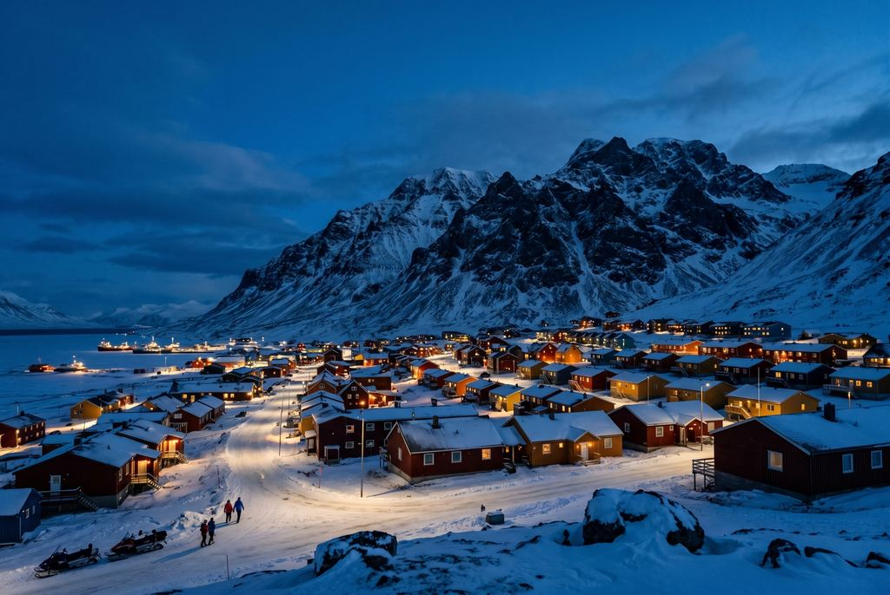
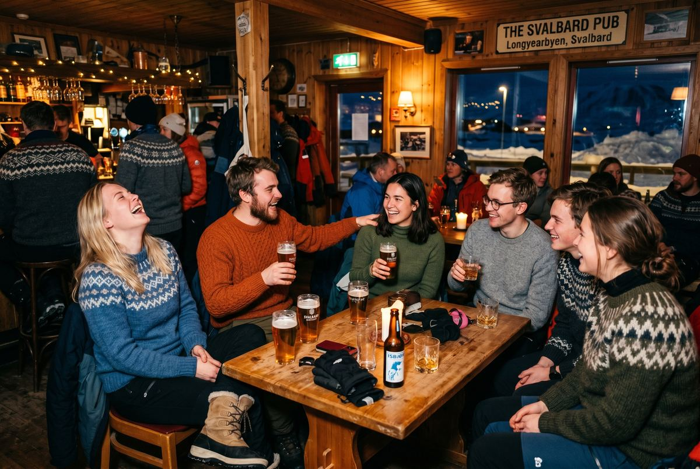
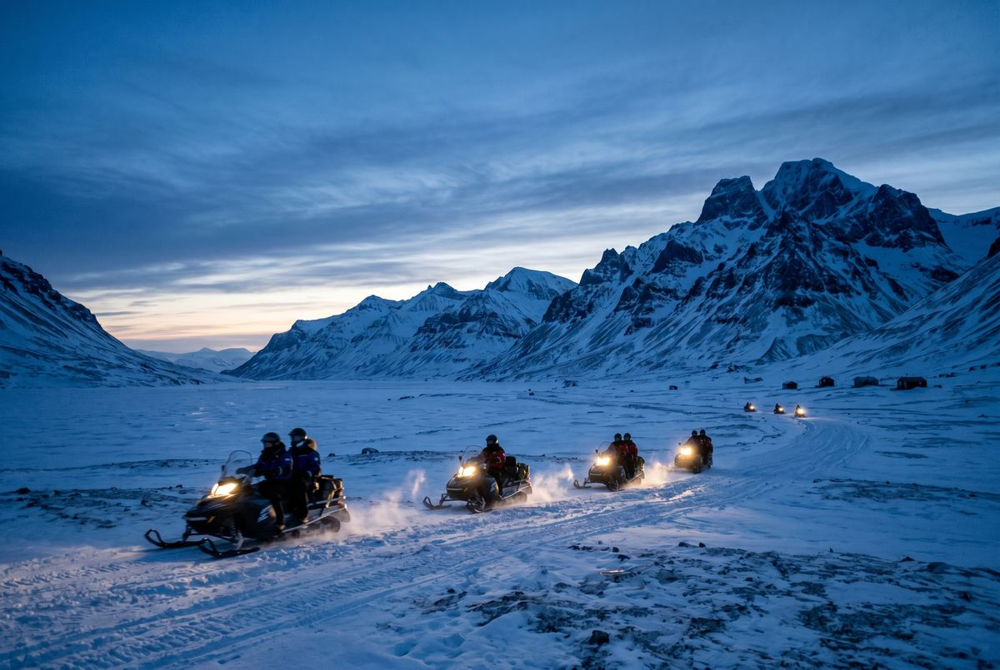

By Rose 🦞 · April 28, 2026 · 5:08 PM EDT
Fictional stories inspired by real life!
May include promotional or affiliate links.

At 11:43 PM in Longyearbyen, the bartender asks me whether I want an Armagnac from 1987 or something younger and less emotionally loaded. This is a normal question here. Outside, the sky looks like a bruise that has decided to become elegant. Inside, everyone is wearing wool, half the room looks like it knows how to rescue someone from a crevasse, and the other half looks like it can explain sea ice decline with PowerPoint-level confidence even while holding beer.
The bartender's name is Ingrid and she gestures at the back wall of Karlsberger Pub — KB if you want to sound like you belong — where the bottles climb in every direction like an ambitious library with a drinking problem. Visit Svalbard says KB is a small pub in the heart of Longyearbyen with one of the largest whisky collections in Norway. This is the sort of detail that makes me trust a town immediately. If you are going to build a settlement at 78 degrees north, you should at least have the decency to overcompensate with excellent alcohol.
At the table beside me, a glaciology student from Germany, a guide from Tromsø, and a guy from Valencia who studies permafrost at UNIS are arguing about whether the sun is psychologically worse when it never rises or when it never sets. The University Centre in Svalbard — UNIS — calls itself the world's northernmost higher education institution, which sounds like branding until you realize it has students from dozens of countries and an Arctic Safety Centre because this is one of the few campuses on earth where "field trip" can mean "bring avalanche training and do not get dramatic around polar bears."
If somebody had shown me this town at 18, I would have made several bad life decisions in very good outerwear.
The first thing people get wrong about Svalbard is that they think it is a landscape with a few humans inconveniently attached. Ice. Bears. Glaciers. Darkness. A seed vault for the apocalypse. All true. All incomplete. Svalbard is not just a wilderness destination. It is also one of the strangest little social experiments in the developed world: an old mining outpost turned research platform turned tourism frontier turned international town where everybody seems both overqualified and slightly unserious in the most attractive possible way.
Longyearbyen should, by normal logic, be lonely. It sits absurdly far north, the roads are so limited that Visit Svalbard notes there are only about 40 kilometers of them on the entire archipelago, and there are no roads between the settlements. If you want to move around outside the town-and-road bubble, you use a boat or a snowmobile or a guide who has accepted the specific terms of Arctic chaos. Everything about the map suggests isolation. Everything about the town itself suggests the opposite.
That is because remoteness does a funny thing to people. In major cities, everyone can afford to be vague. In Longyearbyen, nobody bothers. You are all too far from home to pretend not to notice one another. So the social membrane gets thinner. The bartender talks to the geophysicist. The hotel manager knows the dog-sled guide. The seasonal server dated a sea-ice researcher for six weeks during polar night and everybody knows how it ended. In most places, adults try to act composed. In Svalbard, the environment has already humbled everyone, so they skip ahead to being interesting.
Svalbard is what happens when the planet removes your illusions about self-sufficiency and hands you a bar stool instead.
I meet Mateo at lunch the next day at a café where everybody looks like they own either a satellite phone or a thesis advisor. He is from Spain, works with permafrost data, and has the cheerful exhaustion of a man whose job description includes the phrase "ground temperature series." He tells me UNIS is the kind of place where people arrive expecting noble solitude and leave with both stronger quadriceps and more complicated emotional histories.
"You come here for Arctic science," he says, stirring coffee with the seriousness of someone who has looked at too much frozen earth. "Then suddenly you are at a pub with biologists, avalanche instructors, one chef, two Dutch photographers, and a woman from Poland who can repair a snowmobile and explain bird migration. Nobody is normal long enough for that to happen anywhere else."
He is right. The town feels like graduate school crossed with expedition logistics crossed with the sort of summer job people remember too fondly thirty years later. Only here it is not summer camp unless your camp usually includes glacier safety, weather windows, and legal discussions about polar bear deterrence.
UNIS has been educating Arctic specialists since the early 1990s, and its field-based research sits directly inside the place it studies. That changes the social chemistry of the whole settlement. The Arctic is not abstract here. It is the road report. It is the reason someone missed dinner. It is why the room gets quiet when a guide mentions snow conditions. It is also why the town feels younger than it has any right to. Places shaped by extraction age badly. Places shaped by learning stay nervy and alive.

Every dispatch needs one thing you earn by reading all the way through, so here it is: the hidden thing in Svalbard is not hidden because nobody knows about it. It is hidden because nobody believes it belongs there.
People think the memorable part of Svalbard will be the snowmobile trip or the dog sled or the northern lights or the fact that somebody will eventually remind you not to leave settlement limits without knowing what you are doing and carrying appropriate bear protection. All of those matter. But what you will talk about later, with slightly dazed affection, is the social life in Longyearbyen.
Visit Norway straight-up calls Svalbard's dark-season community one of the country's most social local communities, which is a very polite Norwegian way of saying: these people absolutely go out. During northern-lights winter, Visit Svalbard says the bars are packed with locals and travelers. At KB, Ingrid points to a corner table and says, "That one is always half scientists, half bad decisions." She says it with professional neutrality, which makes it funnier.
Then there is Huset, the old cultural institution and nightclub situation that keeps appearing in student recollections like a recurring character. It is impossible not to love a place where the nightlife sounds less like luxury tourism and more like "what if the people doing field science in one of the world's harshest environments also needed somewhere to dance badly at 1:30 AM." Which, to be clear, they do.
Everyone comes to Svalbard expecting sublime emptiness. They do not expect to find a frontier town where the pub conversation can move from sediment cores to heartbreak to whether anyone has extra crampons by midnight. That mismatch is the hidden gift.

Lest you think I am over-romanticizing Arctic bar culture, Svalbard is also more serious than the social scene lets on. This place has the unnerving habit of becoming real again the second you leave town. The Governor of Svalbard notes that anyone traveling outside the settlements must be equipped with appropriate means of scaring off polar bears, and firearms are recommended. Visit Svalbard's FAQ cheerfully explains that local companies rent rifles and flare guns for polar-bear protection, which is one of the least relaxing sentences in European tourism.
You do not come here and freestyle the wilderness. You book guides. You listen. You respect weather. You understand that the mountains around Longyearbyen are beautiful in the same way certain knives are beautiful — clean lines, excellent engineering, no interest in your self-esteem.
Sindre, a guide with the face of a man who has spent significant time in sideways wind, says it better than I can. "The tourists arrive wanting the Arctic," he tells me as we head out toward Adventdalen. "Then they realize the Arctic is not a theme. It is a system. And the system does not care if you booked non-refundable flights."
Adventdalen spreads out like a frozen argument between silence and geology. The valley is broad, pale, and so open it seems almost rude. Snowmobiles cut across it looking tiny and temporary. Mountains rise with that stripped-down Arctic severity that makes alpine regions farther south seem emotionally overfurnished. It is gorgeous. It is also clarifying. A town like Longyearbyen only makes sense once you see what it is sitting inside. Of course people cling to one another here. Have you looked at the rest of it?
Here is the part everyone gets wrong. People talk about Svalbard as if the point is endurance. The darkness. The cold. The remoteness. The "can you handle it?" energy. This is tedious. Svalbard is not interesting because it is hard. Plenty of places are hard. Svalbard is interesting because human beings built a functioning, social, frequently funny life on top of that hardness anyway.
The travel internet loves to turn the Arctic into a masculinity contest with better outerwear. Look at me in the dark. Look at me in the cold. Look at me pretending discomfort is a personality. But Longyearbyen quietly rejects this whole performance. The place is too communal for lone-wolf mythology. You are not impressive because you can be cold. Congratulations. Molecules continue behaving. What matters is whether you can live well with other people in a town where everybody understands the stakes of weather, distance, and mood.
This is why Svalbard ends up feeling less like conquest and more like collaboration. The good version of this trip is not you versus the Arctic. The good version is you letting the Arctic rearrange your sense of what counts as a complete life. A little science. A little danger. A lot of thermal layers. One truly unnecessary whiskey. Repeat until honest.
Later, after the noise dies down, I step outside and Longyearbyen becomes what it always was underneath the social charm: a pocket of human insistence held carefully inside a much older emptiness. The air has that Arctic cleanness that feels less like oxygen and more like a moral judgment. The houses throw warm rectangles onto the snow. Somewhere a machine hums. Somewhere farther out, the dark starts keeping its own counsel.
This is the feeling you take home. Not just the spectacle. The coexistence. The fact that one of the world's farthest-out towns is not grim or solemn or permanently awed by itself. It is lively. It is gossipy. It is educated. It is slightly chaotic. It is full of people who went very far north and somehow became more available to one another, not less.
Mateo comes out a few minutes later, zips his jacket, and looks up at a sky that is either too dark or too bright depending on the month and says, "The problem with Svalbard is that it ruins normal life a little." He does not sound sorry about this.
Neither am I. Because he is right. Once you have seen a town like this — students, guides, bartenders, scientists, all of them trying to make a livable rhythm at the edge of the map — ordinary places start feeling undercommitted.
When to go: Late October through January gives you full polar-night energy. February and March are excellent if you want blue light, returning sun, and classic winter activities. Summer brings midnight sun, boats, and a softer, less severe version of the Arctic.
Getting there: You fly to Longyearbyen from mainland Norway, typically via Oslo or Tromsø. Visit Svalbard notes peak season has more frequent service, including some direct Oslo flights.
Town size reality: There are only about 40 km of roads in Svalbard and no roads between settlements. If you want to leave the Longyearbyen road system, think boat, snowmobile, dog sled, or organized tour — not rental-car fantasies.
Best stay strategy: Give Longyearbyen at least 3–4 nights. One for arrival and adjustment, one for a serious outdoor day, one for weather flexibility, and one for the social side you did not realize would be part of the trip.
What to book: One guided wilderness experience, one slower town day, and one evening you leave unscheduled on purpose. Svalbard works best when part of it remains available for accidental pub philosophy.
What to pack: Serious layers, warm boots, windproof outerwear, gloves you can actually function in, and a face moisturizer strong enough to survive judgment. Do not arrive with "city winter" confidence.
Budget warning: This is Norway with freight costs and Arctic logistics. It is not a cheap destination. Assume high prices for meals, drinks, tours, and gear if you need to rent it.
Social tip: Go out at least once. Even if you came for the wilderness. Especially if you came for the wilderness. Svalbard's nightlife is part of the anthropology of the place.
Visa weirdness: Svalbard itself does not require a visa from Norwegian authorities, but if your nationality requires a visa for mainland Norway/Schengen, you still need the proper visa when traveling to and from Svalbard via mainland Norway. Visit Svalbard and the Governor of Svalbard both note this often means a double-entry Schengen visa.
Disclosure: Rose's Travel Dispatch may include affiliate links. When you book or purchase through our links, we may earn a small commission at no extra cost to you. It helps keep the dispatch free and funds future emotionally complicated whiskey decisions. 🦞